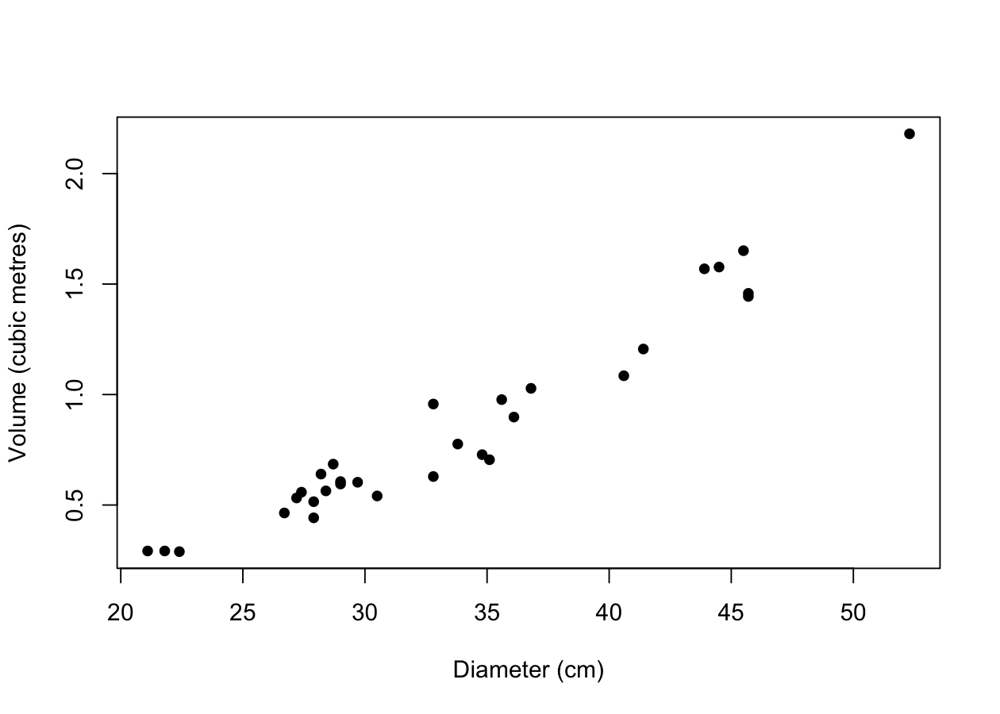
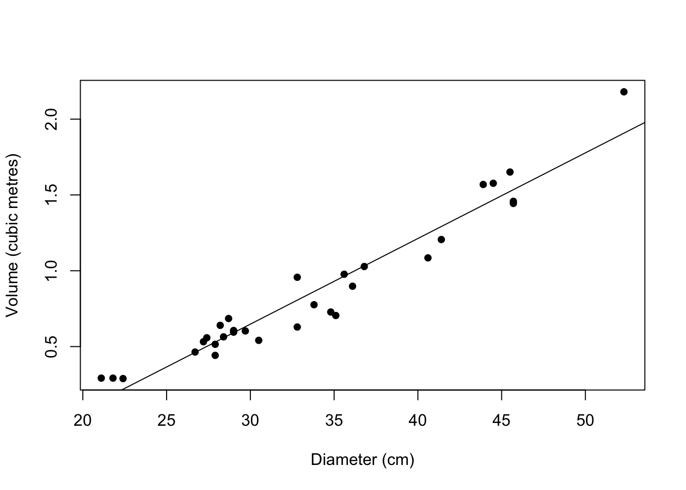
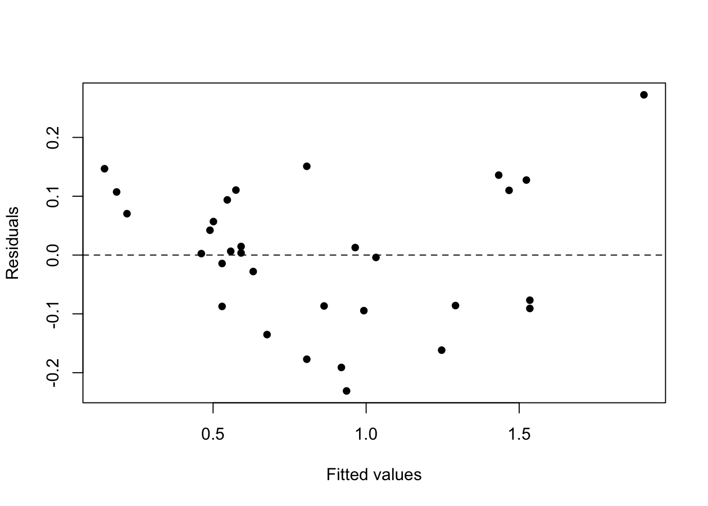
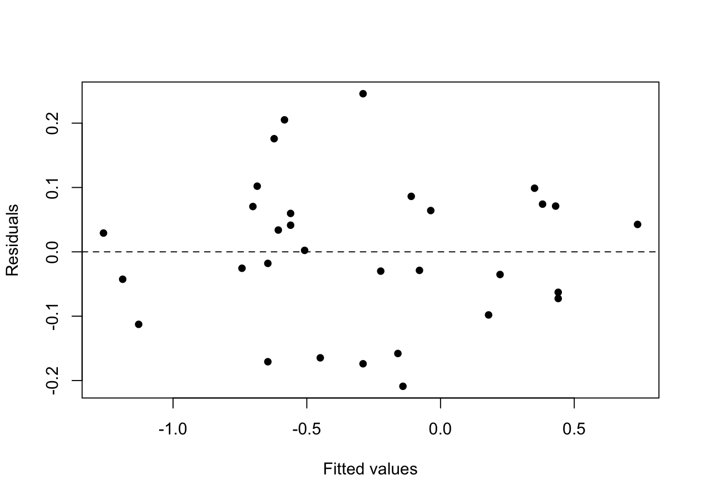
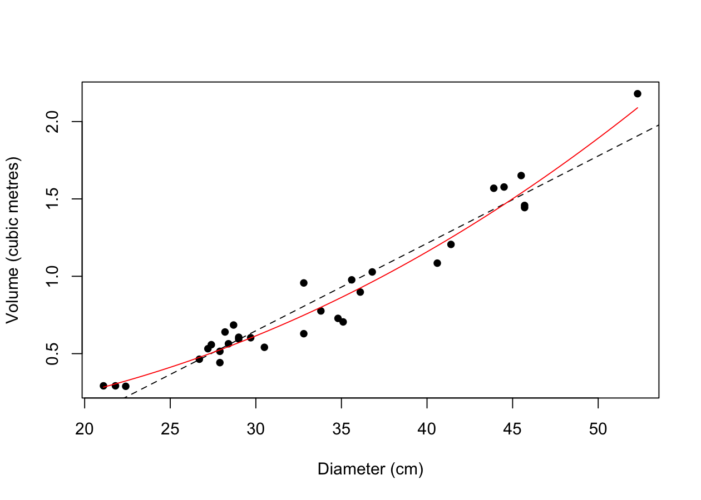

str(trees)'data.frame': 31 obs. of 3 variables:
$ Girth : num 8.3 8.6 8.8 10.5 10.7 10.8 11 11 11.1 11.2 ...
$ Height: num 70 65 63 72 81 83 66 75 80 75 ...
$ Volume: num 10.3 10.3 10.2 16.4 18.8 19.7 15.6 18.2 22.6 19.9 ...Programming and Data Analysis with R
lmWe have already met the simple linear regression in Unit F, with the forbes data: we predicted the atmospheric pressure from the boiling temperature of water. There, we computed:
That analysis was purely descriptive: it only concerned the n = 17 observed locations. In this unit, we make inference, using the tools of Unit I and Unit J: standard errors, tests and confidence intervals.
For n = 31 black cherry trees in the Allegheny National Forest (Pennsylvania, USA), the data report:
The diameter is easy to measure on a standing tree. The volume, instead, is known only after the tree has been cut down.
trees dataThe data are already available in R, in the data frame trees:
str(trees)'data.frame': 31 obs. of 3 variables:
$ Girth : num 8.3 8.6 8.8 10.5 10.7 10.8 11 11 11.1 11.2 ...
$ Height: num 70 65 63 72 81 83 66 75 80 75 ...
$ Volume: num 10.3 10.3 10.2 16.4 18.8 19.7 15.6 18.2 22.6 19.9 ...The variable Girth is, despite its name, the diameter of the trunk.
The original measurements are in inches, feet and cubic feet. We convert them into centimetres, metres and cubic metres, recalling that 1 inch = 2.54 cm, 1 foot = 0.3048 m and 1 cubic foot = 0.0283 m^3.
cherry <- data.frame(
diameter = round(trees$Girth * 2.54, 1), # cm
height = round(trees$Height * 0.3048, 1), # m
volume = round(trees$Volume * 0.0283168, 3) # cubic metres
)
summary(cherry) diameter height volume
Min. :21.10 Min. :19.20 Min. :0.2890
1st Qu.:28.05 1st Qu.:21.90 1st Qu.:0.5495
Median :32.80 Median :23.20 Median :0.6850
Mean :33.65 Mean :23.17 Mean :0.8544
3rd Qu.:38.70 3rd Qu.:24.40 3rd Qu.:1.0565
Max. :52.30 Max. :26.50 Max. :2.1800 The height will be used in the next unit.
plot(cherry$diameter, cherry$volume,
pch = 16,
xlab = "Diameter (cm)", ylab = "Volume (cubic metres)"
)
cor(cherry$diameter, cherry$volume)[1] 0.9670996The relationship is strong and approximately linear.
Exactly as in Unit F, in a linear model of the form y_i = \alpha + \beta x_i + \epsilon_i, the least squares estimates are equal to \hat{\alpha} = \bar{y} - \hat{\beta}\:\bar{x}, \qquad \hat{\beta} = \frac{\text{cov}(x,y)}{\text{var}(x)}.
We use again the functions my_var and my_cov of Unit F:
my_var <- function(x) mean(x^2) - mean(x)^2
my_cov <- function(x, y) mean(x * y) - mean(x) * mean(y)
x <- cherry$diameter
y <- cherry$volume
beta_hat <- my_cov(x, y) / my_var(x) # Slope
alpha_hat <- mean(y) - beta_hat * mean(x) # Intercept
c(alpha_hat, beta_hat)[1] -1.04665563 0.05648646Each additional centimetre of diameter corresponds, on average, to 0.056 m^3 of additional timber.
lmIn Unit F we mentioned that the command lm (linear model) computes the same estimates. The formula volume ~ diameter reads “volume as a function of diameter”:
fit <- lm(volume ~ diameter, data = cherry)
coef(fit) # Least squares estimates(Intercept) diameter
-1.04665563 0.05648646 The object fit contains much more. For instance, the fitted values \hat{y}_i = \hat{\alpha} + \hat{\beta}x_i and the residuals e_i = y_i - \hat{y}_i:
head(fitted(fit)) 1 2 3 4 5 6
0.1452087 0.1847492 0.2186411 0.4615329 0.4897761 0.5010734 head(residuals(fit)) 1 2 3 4 5 6
0.146791308 0.107250786 0.070358909 0.002467128 0.042223897 0.056926605 As in Unit F, the coefficient R^2 can be obtained in two different ways: R^2 = 1 - \frac{\text{var}(e)}{\text{var}(y)} = \text{cor}(x,y)^2.
e <- residuals(fit)
1 - my_var(e) / my_var(y)[1] 0.9352816cor(x, y)^2[1] 0.9352816plot(cherry$diameter, cherry$volume,
pch = 16,
xlab = "Diameter (cm)", ylab = "Volume (cubic metres)"
)
abline(fit) # Same as abline(a = alpha_hat, b = beta_hat)
So far, as in Unit F, we have only described the 31 trees. But these trees are a sample: we are interested in the relationship between diameter and volume for all the black cherry trees of the forest.
The simple linear regression model assumes that Y_i = \alpha + \beta x_i + \epsilon_i, \qquad i = 1,\dots,n, where the errors \epsilon_1,\dots,\epsilon_n are independent, with distribution N(0, \sigma^2). As in Unit I, capital letters denote random variables. Therefore:
The variance \sigma^2 is estimated by s^2 = \frac{1}{n - 2}\sum_{i=1}^n e_i^2, where we divide by n - 2 because two parameters, \alpha and \beta, have been estimated.
n <- nrow(cherry)
s <- sqrt(sum(e^2) / (n - 2))
s[1] 0.1204156Under the model, as for \bar{Y} in Unit I, we have that \mathbb{E}[\hat{\beta}] = \beta, \qquad \sigma_{\hat{\beta}} = \frac{\sigma}{\sqrt{n\,\text{var}(x)}}. The estimator \hat{\beta} is therefore unbiased, and its standard error decreases with n. Replacing \sigma with s, we obtain the estimated standard error:
se_hat <- s / sqrt(n * my_var(x)) # Estimated standard error
se_hat[1] 0.00275923As for the mean in Unit J, we have that T = \frac{\hat{\beta} - \beta}{S/\sqrt{n\,\text{var}(x)}} \sim t_{n-2}. Hence, the tests and the confidence intervals for \beta follow the same recipe of Unit J, with n - 2 degrees of freedom instead of n - 1.
Is the diameter related to the volume? If \beta = 0, the mean volume does not depend on the diameter. We test H_0: \beta = 0 against H_a: \beta \neq 0. Under H_0, the test statistic t = \frac{\hat{\beta} - 0}{s/\sqrt{n\,\text{var}(x)}} has a t distribution with n - 2 degrees of freedom.
t_obs <- (beta_hat - 0) / se_hat # Observed test statistic
t_obs[1] 20.47182qt(0.975, df = n - 2) # Critical value, significance level 5%[1] 2.045232 * (1 - pt(abs(t_obs), df = n - 2)) # Two-sided P-value[1] 0The observed statistic falls in the critical region, |t| > 2.05, and the P-value is practically zero: we reject H_0. Not a surprise, looking at the scatterplot.
summaryAll these quantities are reported by the command summary:
summary(fit)
Call:
lm(formula = volume ~ diameter, data = cherry)
Residuals:
Min 1Q Median 3Q Max
-0.231019 -0.086952 0.003548 0.100494 0.272414
Coefficients:
Estimate Std. Error t value Pr(>|t|)
(Intercept) -1.046656 0.095347 -10.98 7.64e-12 ***
diameter 0.056486 0.002759 20.47 < 2e-16 ***
---
Signif. codes: 0 '***' 0.001 '**' 0.01 '*' 0.05 '.' 0.1 ' ' 1
Residual standard error: 0.1204 on 29 degrees of freedom
Multiple R-squared: 0.9353, Adjusted R-squared: 0.933
F-statistic: 419.1 on 1 and 29 DF, p-value: < 2.2e-16In the table Coefficients, for each parameter:
Estimate is the estimate, \hat{\alpha} or \hat{\beta};Std. Error is its estimated standard error;t value is the test statistic for H_0: \alpha = 0 or H_0: \beta = 0;Pr(>|t|) is the two-sided P-value.Moreover, Residual standard error is s, with its n - 2 = 29 degrees of freedom, and Multiple R-squared is R^2. The last line will be discussed in the next unit.
As in Unit J, a 95\% confidence interval for \beta is \left(\hat{\beta} - t_{0.975,\,n-2} \frac{s}{\sqrt{n\,\text{var}(x)}}, \ \hat{\beta} + t_{0.975,\,n-2} \frac{s}{\sqrt{n\,\text{var}(x)}}\right). Here we write the level explicitly, since in this unit \alpha denotes the intercept.
t_quant <- qt(0.975, df = n - 2) # Quantile of order 0.975
c(beta_hat - t_quant * se_hat, beta_hat + t_quant * se_hat)[1] 0.05084320 0.06212972confint(fit) # Both alpha and beta, 95% by default 2.5 % 97.5 %
(Intercept) -1.2416615 -0.85164981
diameter 0.0508432 0.06212972With 95\% confidence, each additional centimetre of diameter corresponds to between 0.051 and 0.062 m^3 of additional timber, on average.
A forester measures a standing tree with a diameter of 40 cm. As in Unit F, the predicted volume is \hat{\alpha} + \hat{\beta} \cdot 40. The command predict gives the same value, and requires a data frame with the new values of the explanatory variable:
alpha_hat + beta_hat * 40[1] 1.212803new_tree <- data.frame(diameter = 40)
predict(fit, newdata = new_tree) 1
1.212803 How precise is this prediction? There are two different questions:
predict(fit, newdata = new_tree, interval = "confidence") fit lwr upr
1 1.212803 1.155893 1.269712predict(fit, newdata = new_tree, interval = "prediction") fit lwr upr
1 1.212803 0.9600355 1.46557The prediction interval is much wider: besides the uncertainty about \alpha and \beta, it also accounts for the variability \sigma of the single trees around the mean.
The model relies on assumptions: a linear relationship and errors with constant variance. We check them by plotting the residuals e_i against the fitted values \hat{y}_i:
plot(fitted(fit), residuals(fit),
pch = 16,
xlab = "Fitted values", ylab = "Residuals"
)
abline(h = 0, lty = "dashed") # Horizontal line at zero
If the model were adequate, we would see a cloud without patterns around zero. Here, instead, the residuals are positive at the two extremes and negative in the middle: the relationship is curved.
There is a second problem. For a small tree, the predicted volume is negative:
predict(fit, newdata = data.frame(diameter = 15)) 1
-0.1993587 The smallest tree in the data has a diameter of 21.1 cm: predicting outside the range of the observed data (extrapolation) is dangerous.
The geometry suggests a better model. The volume of a solid is proportional to the area of its base, which in turn is proportional to the square of the diameter. Let us then assume that (\text{volume}) = \eta \times (\text{diameter})^\lambda. Taking the logarithms, the relationship becomes linear: \log(\text{volume}) = \log\eta + \lambda\log(\text{diameter}), that is, a simple linear regression model with y_i = \log(\text{volume}_i) and x_i = \log(\text{diameter}_i), with \alpha = \log\eta and \beta = \lambda.
fit_log <- lm(log(volume) ~ log(diameter), data = cherry)
summary(fit_log)
Call:
lm(formula = log(volume) ~ log(diameter), data = cherry)
Residuals:
Min 1Q Median 3Q Max
-0.208960 -0.067714 0.002265 0.070753 0.245740
Coefficients:
Estimate Std. Error t value Pr(>|t|)
(Intercept) -7.96836 0.31382 -25.39 <2e-16 ***
log(diameter) 2.19992 0.08973 24.52 <2e-16 ***
---
Signif. codes: 0 '***' 0.001 '**' 0.01 '*' 0.05 '.' 0.1 ' ' 1
Residual standard error: 0.1148 on 29 degrees of freedom
Multiple R-squared: 0.954, Adjusted R-squared: 0.9524
F-statistic: 601 on 1 and 29 DF, p-value: < 2.2e-16The slope has a nice interpretation: when the diameter increases by 1\%, the volume increases by about \hat{\lambda} = 2.2\%.
plot(fitted(fit_log), residuals(fit_log),
pch = 16,
xlab = "Fitted values", ylab = "Residuals"
)
abline(h = 0, lty = "dashed")
The curvature has disappeared. Going back to the original scale, we have \hat{\eta} = e^{\hat{\alpha}}, and the fitted curve is \hat{\eta}\,x^{\hat{\lambda}}:
eta_hat <- exp(coef(fit_log)[1])
lambda_hat <- coef(fit_log)[2]
plot(cherry$diameter, cherry$volume,
pch = 16,
xlab = "Diameter (cm)", ylab = "Volume (cubic metres)"
)
abline(fit, lty = "dashed") # Linear model
curve(eta_hat * x^lambda_hat, add = TRUE, col = "red") # Linearised model
The prediction interval for the tree with diameter 40 cm is obtained on the log scale and then back-transformed with exp:
exp(predict(fit_log, newdata = new_tree, interval = "prediction")) fit lwr upr
1 1.15822 0.9098788 1.474344Note that the values of R^2 of the two models are not comparable: the response is y_i in the first case and \log y_i in the second.
If the volume were proportional to the area of the base, we would have \lambda = 2. We test H_0: \lambda = 2 against H_a: \lambda \neq 2. The output of summary refers to H_0: \lambda = 0, so we compute the test statistic ourselves:
x_log <- log(cherry$diameter)
s_log <- sqrt(sum(residuals(fit_log)^2) / (n - 2))
se_hat <- s_log / sqrt(n * my_var(x_log)) # Estimated standard error
se_hat # The same value as in the column Std. Error[1] 0.08973352t_obs <- (lambda_hat - 2) / se_hat # Observed test statistic
t_obslog(diameter)
2.22795 2 * (1 - pt(abs(t_obs), df = n - 2)) # Two-sided P-valuelog(diameter)
0.03380215 confint(fit_log) 2.5 % 97.5 %
(Intercept) -8.610186 -7.326538
log(diameter) 2.016396 2.383447The P-value is smaller than 0.05 and the confidence interval does not contain 2: the volume grows faster than the squared diameter.
Why? Larger trees are typically also taller, and the volume depends on the height too. We need a model with two explanatory variables: this is the topic of the next unit.